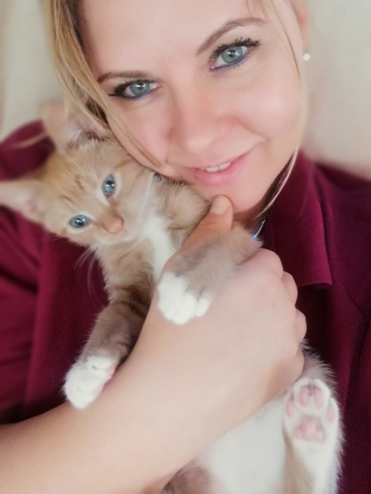

Meow
Me&Boo
Mijn liefde voor katten
Mijn liefde voor katten heb ik ontdekt toen ik kind was, ik bracht altijd een dakloze naar huis omdat ik ze zo zielig vond. Katten zijn geweldige dieren met een uniek karakter; onafhankelijk, eigenwijs, kieskeurig en hilarisch.
Ik ben Boo
Meow, ik ben Boo, een katertje van zes weken oud. Ik ben heel lief, onvoorspelbaar en schattig maar soms ook ondeugend. Ik hou van spelen, slapen en klimmen op mijn baasje. Ik krijg lekkere hapjes hier en ik wordt goed verzorgd. Wat ik het leukste vind, is slapen in de badjas bij mijn vrouwtje, ik word altijd heerlijk gekrabd... Maar ik snap soms niet waarom ze zoveel moet tikken op dat rare, vierkante ding? Wat irritant zeg! Voor de rest ik mag niet klagen. Miauw..